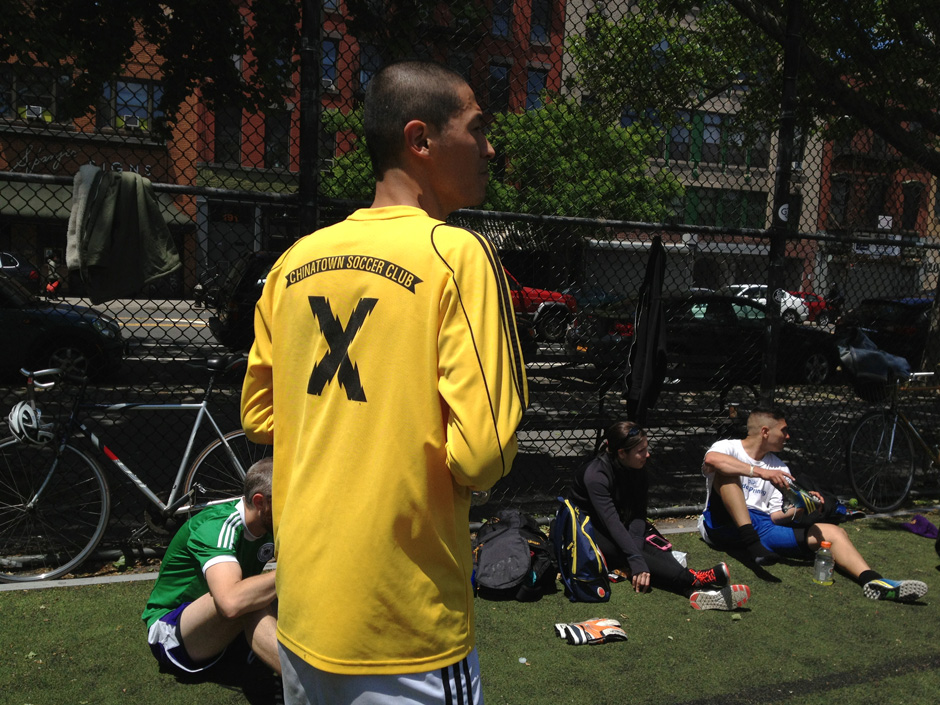
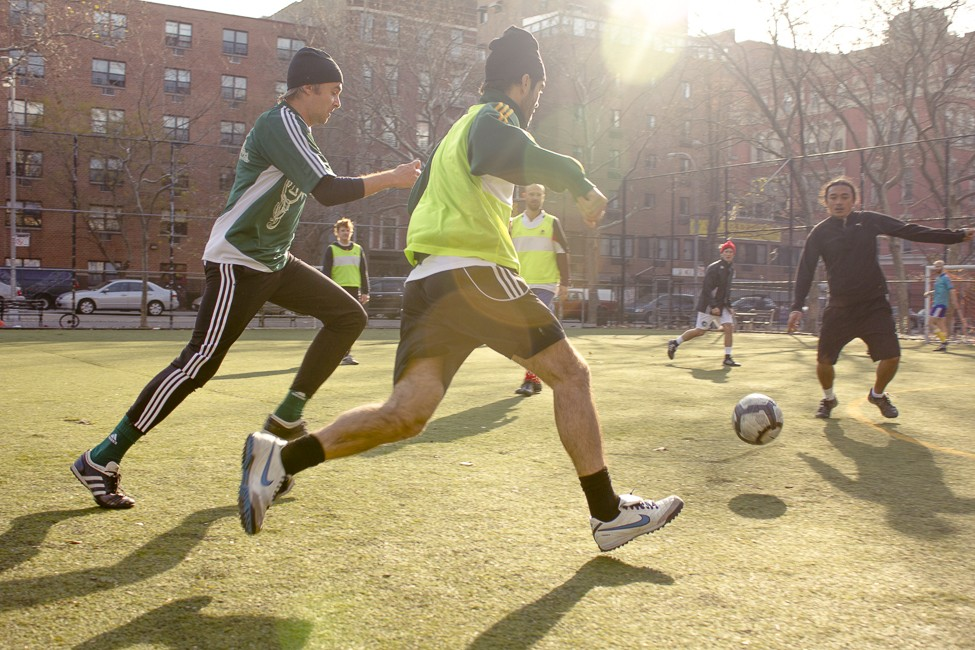
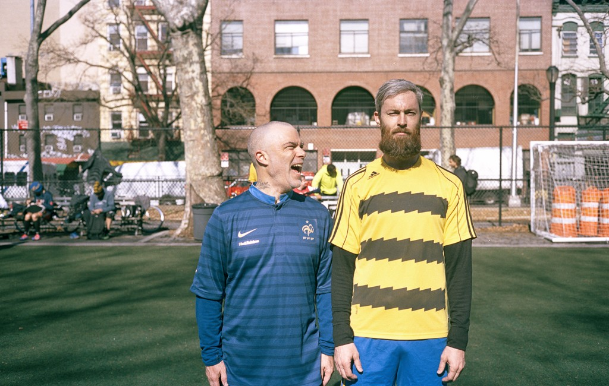
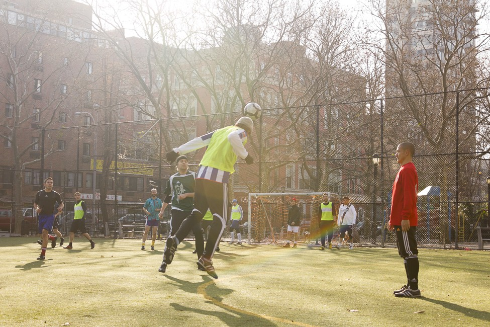
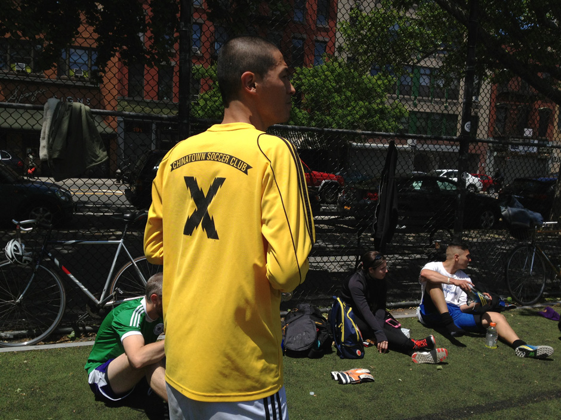
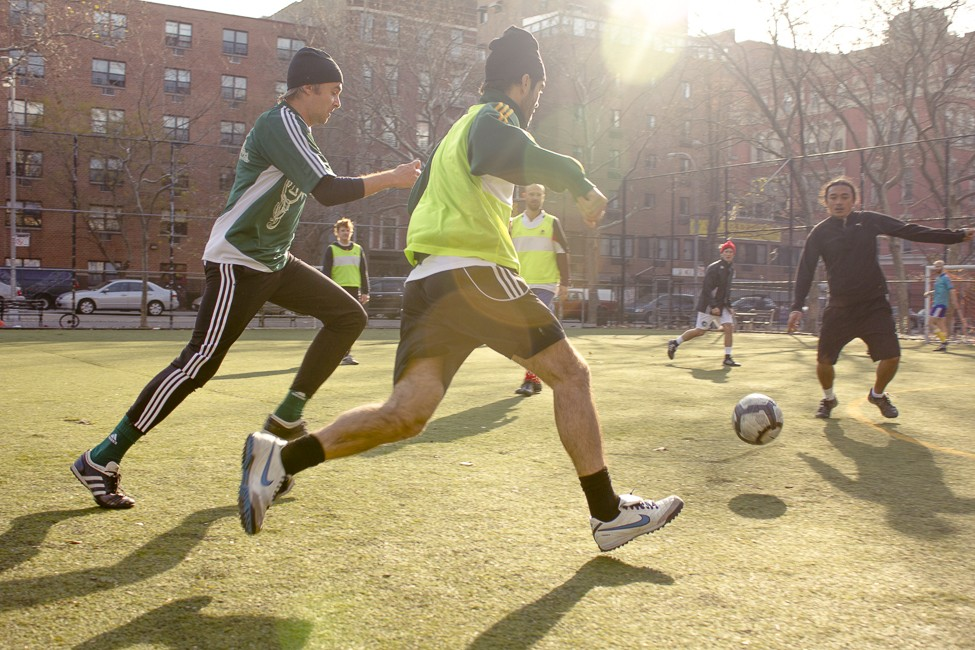
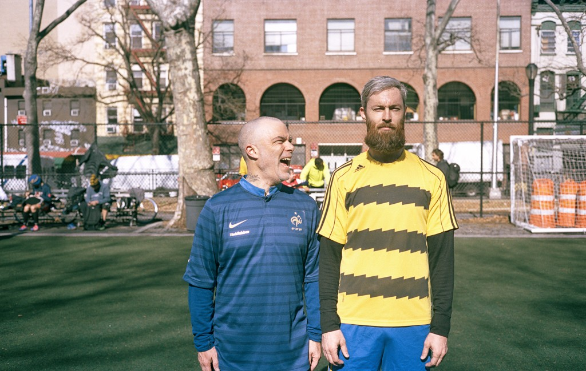
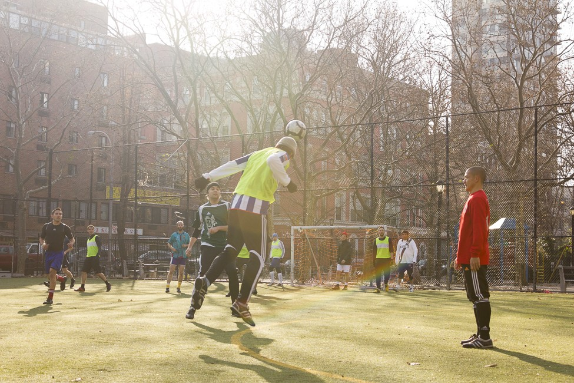

ABOUT
he Chinatown Soccer Club is one of the most inspirational soccer clubs around. It was founded in 2002, when adidas invited crews from New York's creative industry to take part in the Fanatic Tournament, where the “CSC” played alongside teams formed by the likes of Alife and Supreme
he Chinatown Soccer Club is one of the most inspirational soccer clubs around. It was founded in 2002, when adidas invited crews from New York's creative industry to take part in the Fanatic Tournament, where the “CSC” played alongside teams formed by the likes of Alife and Supreme
 







the Chinatown Soccer Club is one of the most inspirational soccer clubs around. It was founded in 2002, when adidas invited crews from New York's creative industry to take part in the Fanatic Tournament.